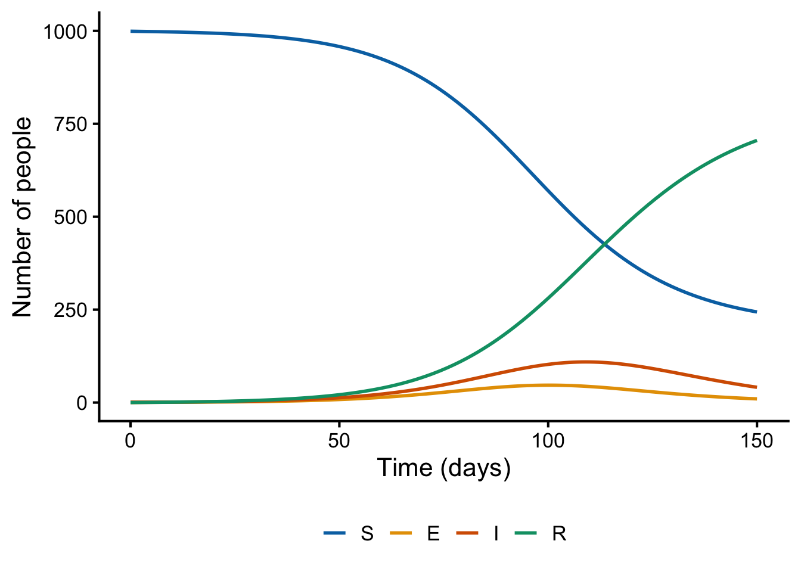
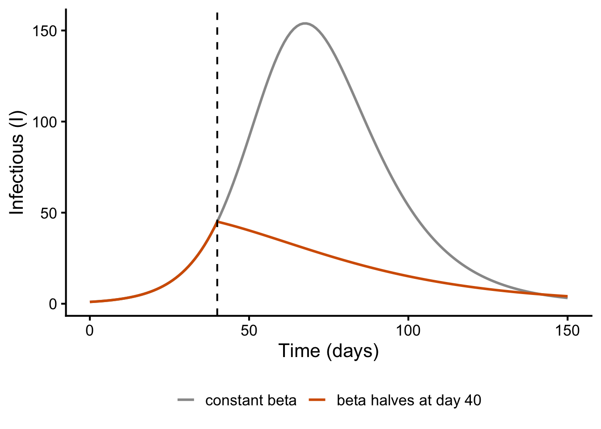

Goal: grow the SIR skeleton into models with latent periods, population dynamics and parameters that change over time.
2.1 Adding a latent period: the SEIR model
For many infections people are exposed but not yet infectious — a latent period. Add an Exposed compartment \(E\); exposed people become infectious at rate \(\sigma\) (so \(1/\sigma\) is the mean latent period):
\[
\frac{dS}{dt} = -\beta SI, \quad
\frac{dE}{dt} = \beta SI - \sigma E, \quad
\frac{dI}{dt} = \sigma E - \gamma I, \quad
\frac{dR}{dt} = \gamma I
\]
In odin this means one more compartment and re-routing the flows:
seir_generator <- odin::odin({deriv(S) <--beta * S * Ideriv(E) <- beta * S * I - sigma * Ederiv(I) <- sigma * E - gamma * Ideriv(R) <- gamma * Iinitial(S) <- N0 - I0initial(E) <-0initial(I) <- I0initial(R) <-0 N0 <-user(1000) I0 <-user(1) beta <-user(2e-4) # R0 = beta * N / gamma = 2 gamma <-user(0.1) # infectious period 10 days sigma <-user(0.25) # latent period 4 days})
── R CMD INSTALL ───────────────────────────────────────────────────────────────
* installing *source* package ‘odincd132da0’ ...
** this is package ‘odincd132da0’ version ‘0.0.1’
** using staged installation
** libs
using C compiler: ‘Apple clang version 21.0.0 (clang-2100.1.1.101)’
using SDK: ‘MacOSX26.5.sdk’
clang -std=gnu23 -I"/opt/homebrew/Cellar/r/4.6.1/lib/R/include" -DNDEBUG -I/opt/homebrew/opt/gettext/include -I/opt/homebrew/opt/readline/include -I/opt/homebrew/opt/xz/include -I/opt/homebrew/include -I/opt/homebrew/Cellar/harfbuzz/14.2.1/include/harfbuzz -I/opt/homebrew/opt/freetype/include/freetype2 -I/opt/homebrew/opt/libpng/include/libpng16 -I/opt/homebrew/Cellar/glib/2.88.2/include/glib-2.0 -I/opt/homebrew/Cellar/glib/2.88.2/lib/glib-2.0/include -I/opt/homebrew/opt/gettext/include -I/opt/homebrew/Cellar/pcre2/10.47_1/include -I/opt/homebrew/opt/graphite2/include -fPIC -g -O2 -UNDEBUG -Wall -pedantic -g -O0 -c odin.c -o odin.o
odin.c:125:18: warning: unused variable 'internal' [-Wunused-variable]
125 | odin_internal *internal = odin_get_internal(internal_p, 1);
| ^~~~~~~~
odin.c:213:52: warning: format specifies type 'int' but the argument has type 'const char *' [-Wformat]
213 | Rf_error("Expected scalar integer for '%d'", name);
| ~~ ^~~~
| %s
2 warnings generated.
clang -std=gnu23 -I"/opt/homebrew/Cellar/r/4.6.1/lib/R/include" -DNDEBUG -I/opt/homebrew/opt/gettext/include -I/opt/homebrew/opt/readline/include -I/opt/homebrew/opt/xz/include -I/opt/homebrew/include -I/opt/homebrew/Cellar/harfbuzz/14.2.1/include/harfbuzz -I/opt/homebrew/opt/freetype/include/freetype2 -I/opt/homebrew/opt/libpng/include/libpng16 -I/opt/homebrew/Cellar/glib/2.88.2/include/glib-2.0 -I/opt/homebrew/Cellar/glib/2.88.2/lib/glib-2.0/include -I/opt/homebrew/opt/gettext/include -I/opt/homebrew/Cellar/pcre2/10.47_1/include -I/opt/homebrew/opt/graphite2/include -fPIC -g -O2 -UNDEBUG -Wall -pedantic -g -O0 -c registration.c -o registration.o
clang -std=gnu23 -dynamiclib -Wl,-headerpad_max_install_names -undefined dynamic_lookup -L/opt/homebrew/Cellar/r/4.6.1/lib/R/lib -L/opt/homebrew/opt/gettext/lib -L/opt/homebrew/opt/readline/lib -L/opt/homebrew/opt/xz/lib -L/opt/homebrew/lib -o odincd132da0.so odin.o registration.o -L/opt/homebrew/Cellar/harfbuzz/14.2.1/lib -lharfbuzz -L/opt/homebrew/Cellar/r/4.6.1/lib/R/lib -lR
installing to /private/var/folders/h7/2ngcws596w5922f6d7351gw80000gp/T/RtmpjwZgCU/devtools_install_89a4158067ac/00LOCK-file89a45049baff/00new/odincd132da0/libs
** checking absolute paths in shared objects and dynamic libraries
* DONE (odincd132da0)
out_seir <- seir_generator$new()$run(times) # run with default parameters
as.data.frame(out_seir) |>pivot_longer(-t, names_to ="compartment", values_to ="n") |>mutate(compartment =factor(compartment, levels =c("S", "E", "I", "R"))) |>ggplot(aes(t, n, colour = compartment)) +geom_line(linewidth =1) +scale_colour_manual(values =c(S ="#0072B2", E ="#E69F00", I ="#D55E00", R ="#009E73")) +labs(x ="Time (days)", y ="Number of people", colour =NULL) +theme_classic(base_size =16) +theme(legend.position ="bottom")

SEIR epidemic with a 4-day latent period
Compared with the SIR from lecture 1, the same \(R_0 = \beta N / \gamma\) now gives a later, broader peak — the latent period slows the epidemic down even though it does not change \(R_0\). Rather than take that on trust, plot both:
Same R0 = 2: the latent period delays and lowers the peak
The peak arrives later and is lower — the same total transmission, spread over a longer time.
2.2 Births and deaths: demography
So far the epidemic is a one-off: everyone ends up in \(R\) and nothing else happens. Over longer horizons, births replenish the susceptible pool. Add a per-capita birth/death rate \(\mu\): births enter \(S\), deaths leave every compartment at rate \(\mu\), so \(N\) stays constant. We now need \(N = S + E + I + R\) explicitly for the birth term.
To see the long-term behaviour on a short horizon we use fast turnover — a mean of 2 years in the population (think of a nursery or boarding school rather than a national population). Slower turnover gives the same qualitative behaviour, just over decades.
seir_demo <- odin::odin({deriv(S) <- mu * N - beta * S * I - mu * Sderiv(E) <- beta * S * I - sigma * E - mu * Ederiv(I) <- sigma * E - gamma * I - mu * Ideriv(R) <- gamma * I - mu * R N <- S + E + I + Rinitial(S) <- N0 - I0initial(E) <-0initial(I) <- I0initial(R) <-0 N0 <-user(1000) I0 <-user(1) beta <-user(2e-4) gamma <-user(0.1) sigma <-user(0.25) mu <-user(1/ (2*365)) # mean 2 years in the population})
── R CMD INSTALL ───────────────────────────────────────────────────────────────
* installing *source* package ‘odinfedf9a22’ ...
** this is package ‘odinfedf9a22’ version ‘0.0.1’
** using staged installation
** libs
using C compiler: ‘Apple clang version 21.0.0 (clang-2100.1.1.101)’
using SDK: ‘MacOSX26.5.sdk’
clang -std=gnu23 -I"/opt/homebrew/Cellar/r/4.6.1/lib/R/include" -DNDEBUG -I/opt/homebrew/opt/gettext/include -I/opt/homebrew/opt/readline/include -I/opt/homebrew/opt/xz/include -I/opt/homebrew/include -I/opt/homebrew/Cellar/harfbuzz/14.2.1/include/harfbuzz -I/opt/homebrew/opt/freetype/include/freetype2 -I/opt/homebrew/opt/libpng/include/libpng16 -I/opt/homebrew/Cellar/glib/2.88.2/include/glib-2.0 -I/opt/homebrew/Cellar/glib/2.88.2/lib/glib-2.0/include -I/opt/homebrew/opt/gettext/include -I/opt/homebrew/Cellar/pcre2/10.47_1/include -I/opt/homebrew/opt/graphite2/include -fPIC -g -O2 -UNDEBUG -Wall -pedantic -g -O0 -c odin.c -o odin.o
odin.c:130:18: warning: unused variable 'internal' [-Wunused-variable]
130 | odin_internal *internal = odin_get_internal(internal_p, 1);
| ^~~~~~~~
odin.c:220:52: warning: format specifies type 'int' but the argument has type 'const char *' [-Wformat]
220 | Rf_error("Expected scalar integer for '%d'", name);
| ~~ ^~~~
| %s
2 warnings generated.
clang -std=gnu23 -I"/opt/homebrew/Cellar/r/4.6.1/lib/R/include" -DNDEBUG -I/opt/homebrew/opt/gettext/include -I/opt/homebrew/opt/readline/include -I/opt/homebrew/opt/xz/include -I/opt/homebrew/include -I/opt/homebrew/Cellar/harfbuzz/14.2.1/include/harfbuzz -I/opt/homebrew/opt/freetype/include/freetype2 -I/opt/homebrew/opt/libpng/include/libpng16 -I/opt/homebrew/Cellar/glib/2.88.2/include/glib-2.0 -I/opt/homebrew/Cellar/glib/2.88.2/lib/glib-2.0/include -I/opt/homebrew/opt/gettext/include -I/opt/homebrew/Cellar/pcre2/10.47_1/include -I/opt/homebrew/opt/graphite2/include -fPIC -g -O2 -UNDEBUG -Wall -pedantic -g -O0 -c registration.c -o registration.o
clang -std=gnu23 -dynamiclib -Wl,-headerpad_max_install_names -undefined dynamic_lookup -L/opt/homebrew/Cellar/r/4.6.1/lib/R/lib -L/opt/homebrew/opt/gettext/lib -L/opt/homebrew/opt/readline/lib -L/opt/homebrew/opt/xz/lib -L/opt/homebrew/lib -o odinfedf9a22.so odin.o registration.o -L/opt/homebrew/Cellar/harfbuzz/14.2.1/lib -lharfbuzz -L/opt/homebrew/Cellar/r/4.6.1/lib/R/lib -lR
installing to /private/var/folders/h7/2ngcws596w5922f6d7351gw80000gp/T/RtmpjwZgCU/devtools_install_89a483e9516/00LOCK-file89a4771e2d87/00new/odinfedf9a22/libs
** checking absolute paths in shared objects and dynamic libraries
* DONE (odinfedf9a22)
times_long <-seq(0, 365*20, by =7) # 20 years, weekly outputout_demo <- seir_demo$new()$run(times_long)
With births, the infection persists: damped oscillations towards an endemic equilibrium (first 10 years shown)
Instead of dying out after one wave, incidence oscillates with shrinking amplitude and settles to an endemic equilibrium — newborn susceptibles keep transmission going. (With the 70-year turnover of a national population, the first wave would exhaust the susceptibles so thoroughly that the infection dies out before births can replenish them — worth remembering that these deterministic models allow unrealistically small prevalence.)
2.3 Time-varying parameters
So far every parameter has been fixed for the whole run. Real drivers change over time: transmission rises in winter and falls in summer, and it can shift abruptly when behaviour changes. The solver needs parameter values at arbitrary times — not just at the times you have data for — so odin takes a time series of values from you and builds a continuous function from it with interpolate(). We will look at two examples first, then at how the machinery works.
2.3.1 A shift in regime: "constant"
The simplest case: transmission changes from one level to another at a known time and stays there — two regimes. With "constant" interpolation, beta holds each knot’s value until the next knot, which is exactly a step:
sir_step <- odin::odin({deriv(S) <--beta * S * Ideriv(I) <- beta * S * I - gamma * Ideriv(R) <- gamma * I## beta as a step function of time beta <-interpolate(beta_times, beta_vals, "constant") beta_times[] <-user() # regime change times beta_vals[] <-user() # beta in each regimedim(beta_times) <-user()dim(beta_vals) <-user()initial(S) <- N0 - I0initial(I) <- I0initial(R) <-0 N0 <-user(1000) I0 <-user(1) gamma <-user(0.1)})
── R CMD INSTALL ───────────────────────────────────────────────────────────────
* installing *source* package ‘odin3a6e401a’ ...
** this is package ‘odin3a6e401a’ version ‘0.0.1’
** using staged installation
** libs
using C compiler: ‘Apple clang version 21.0.0 (clang-2100.1.1.101)’
using SDK: ‘MacOSX26.5.sdk’
clang -std=gnu23 -I"/opt/homebrew/Cellar/r/4.6.1/lib/R/include" -DNDEBUG -I/opt/homebrew/opt/gettext/include -I/opt/homebrew/opt/readline/include -I/opt/homebrew/opt/xz/include -I/opt/homebrew/include -I/opt/homebrew/Cellar/harfbuzz/14.2.1/include/harfbuzz -I/opt/homebrew/opt/freetype/include/freetype2 -I/opt/homebrew/opt/libpng/include/libpng16 -I/opt/homebrew/Cellar/glib/2.88.2/include/glib-2.0 -I/opt/homebrew/Cellar/glib/2.88.2/lib/glib-2.0/include -I/opt/homebrew/opt/gettext/include -I/opt/homebrew/Cellar/pcre2/10.47_1/include -I/opt/homebrew/opt/graphite2/include -fPIC -g -O2 -UNDEBUG -Wall -pedantic -g -O0 -c odin.c -o odin.o
odin.c:248:52: warning: format specifies type 'int' but the argument has type 'const char *' [-Wformat]
248 | Rf_error("Expected scalar integer for '%d'", name);
| ~~ ^~~~
| %s
odin.c:393:18: warning: format specifies type 'int' but the argument has type 'size_t' (aka 'unsigned long') [-Wformat]
392 | Rf_error("Incorrect size of dimension %d of %s (expected %d)",
| ~~
| %zu
393 | i + 1, name, dim_expected);
| ^~~~~
odin.c:472:26: warning: format specifies type 'int' but the argument has type 'size_t' (aka 'unsigned long') [-Wformat]
471 | Rf_error("Expected %s to have length %d (for '%s')",
| ~~
| %zu
472 | name_arg, nx, name_target);
| ^~
odin.c:476:16: warning: format specifies type 'int' but the argument has type 'size_t' (aka 'unsigned long') [-Wformat]
475 | Rf_error("Expected dimension %d of %s to have size %d (for '%s')",
| ~~
| %zu
476 | i, name_arg, nx, name_target);
| ^
odin.c:476:29: warning: format specifies type 'int' but the argument has type 'size_t' (aka 'unsigned long') [-Wformat]
475 | Rf_error("Expected dimension %d of %s to have size %d (for '%s')",
| ~~
| %zu
476 | i, name_arg, nx, name_target);
| ^~
5 warnings generated.
clang -std=gnu23 -I"/opt/homebrew/Cellar/r/4.6.1/lib/R/include" -DNDEBUG -I/opt/homebrew/opt/gettext/include -I/opt/homebrew/opt/readline/include -I/opt/homebrew/opt/xz/include -I/opt/homebrew/include -I/opt/homebrew/Cellar/harfbuzz/14.2.1/include/harfbuzz -I/opt/homebrew/opt/freetype/include/freetype2 -I/opt/homebrew/opt/libpng/include/libpng16 -I/opt/homebrew/Cellar/glib/2.88.2/include/glib-2.0 -I/opt/homebrew/Cellar/glib/2.88.2/lib/glib-2.0/include -I/opt/homebrew/opt/gettext/include -I/opt/homebrew/Cellar/pcre2/10.47_1/include -I/opt/homebrew/opt/graphite2/include -fPIC -g -O2 -UNDEBUG -Wall -pedantic -g -O0 -c registration.c -o registration.o
clang -std=gnu23 -dynamiclib -Wl,-headerpad_max_install_names -undefined dynamic_lookup -L/opt/homebrew/Cellar/r/4.6.1/lib/R/lib -L/opt/homebrew/opt/gettext/lib -L/opt/homebrew/opt/readline/lib -L/opt/homebrew/opt/xz/lib -L/opt/homebrew/lib -o odin3a6e401a.so odin.o registration.o -L/opt/homebrew/Cellar/harfbuzz/14.2.1/lib -lharfbuzz -L/opt/homebrew/Cellar/r/4.6.1/lib/R/lib -lR
installing to /private/var/folders/h7/2ngcws596w5922f6d7351gw80000gp/T/RtmpjwZgCU/devtools_install_89a451234c30/00LOCK-file89a4348ce628/00new/odin3a6e401a/libs
** checking absolute paths in shared objects and dynamic libraries
* DONE (odin3a6e401a)
## two regimes: beta halves at day 40beta_times <-c(0, 40, 150)beta_vals <-c(2e-4, 1e-4, 1e-4)out_step <- sir_step$new(beta_times = beta_times,beta_vals = beta_vals)$run(times)out_nostep <- sir_generator$new()$run(times) # baseline: constant beta
(sir_generator is the plain SIR from the SEIR comparison.) Plot the forcing first — always check what you are feeding in:
tibble(t = times,`constant beta`= out_nostep[, "I"],`beta halves at day 40`= out_step[, "I"]) |>pivot_longer(-t, names_to ="scenario", values_to ="I") |>mutate(scenario =factor(scenario,levels =c("constant beta", "beta halves at day 40"))) |>ggplot(aes(t, I, colour = scenario)) +geom_line(linewidth =1) +geom_vline(xintercept =40, linetype ="dashed") +scale_colour_manual(values =c("constant beta"="grey60", "beta halves at day 40"="#D55E00")) +labs(x ="Time (days)", y ="Infectious (I)", colour =NULL) +theme_classic(base_size =16) +theme(legend.position ="bottom")

Halving transmission at day 40 bends the epidemic curve
Note the workflow is unchanged: one compiled model, and the time series is just another set of parameters supplied at $new().
2.3.2 Seasonal forcing: "linear"
A step is not the right shape for drivers that vary smoothly, like seasonality. One practical point first: in the closed models so far, a single wave infects most of the population and then transmission is over — there is nothing left for seasonality to act on. To see recurrent seasonal waves we let immunity wane: recovered people return to the susceptible compartment at rate \(\omega\) (mean immunity duration \(1/\omega\), here 90 days). This is the SIRS model, with a seasonal beta interpolated linearly:
sirs_seasonal <- odin::odin({deriv(S) <--beta * S * I + omega * Rderiv(I) <- beta * S * I - gamma * Ideriv(R) <- gamma * I - omega * R## beta interpolated from a user-supplied time series beta <-interpolate(beta_times, beta_vals, "linear") beta_times[] <-user() # time points beta_vals[] <-user() # beta at each time pointdim(beta_times) <-user()dim(beta_vals) <-user()initial(S) <- N0 - I0initial(I) <- I0initial(R) <-0 N0 <-user(1000) I0 <-user(1) gamma <-user(0.1) # infectious period 10 days omega <-user(1/90) # immunity lasts 90 days on average})
── R CMD INSTALL ───────────────────────────────────────────────────────────────
* installing *source* package ‘odin3364ef32’ ...
** this is package ‘odin3364ef32’ version ‘0.0.1’
** using staged installation
** libs
using C compiler: ‘Apple clang version 21.0.0 (clang-2100.1.1.101)’
using SDK: ‘MacOSX26.5.sdk’
clang -std=gnu23 -I"/opt/homebrew/Cellar/r/4.6.1/lib/R/include" -DNDEBUG -I/opt/homebrew/opt/gettext/include -I/opt/homebrew/opt/readline/include -I/opt/homebrew/opt/xz/include -I/opt/homebrew/include -I/opt/homebrew/Cellar/harfbuzz/14.2.1/include/harfbuzz -I/opt/homebrew/opt/freetype/include/freetype2 -I/opt/homebrew/opt/libpng/include/libpng16 -I/opt/homebrew/Cellar/glib/2.88.2/include/glib-2.0 -I/opt/homebrew/Cellar/glib/2.88.2/lib/glib-2.0/include -I/opt/homebrew/opt/gettext/include -I/opt/homebrew/Cellar/pcre2/10.47_1/include -I/opt/homebrew/opt/graphite2/include -fPIC -g -O2 -UNDEBUG -Wall -pedantic -g -O0 -c odin.c -o odin.o
odin.c:254:52: warning: format specifies type 'int' but the argument has type 'const char *' [-Wformat]
254 | Rf_error("Expected scalar integer for '%d'", name);
| ~~ ^~~~
| %s
odin.c:399:18: warning: format specifies type 'int' but the argument has type 'size_t' (aka 'unsigned long') [-Wformat]
398 | Rf_error("Incorrect size of dimension %d of %s (expected %d)",
| ~~
| %zu
399 | i + 1, name, dim_expected);
| ^~~~~
odin.c:478:26: warning: format specifies type 'int' but the argument has type 'size_t' (aka 'unsigned long') [-Wformat]
477 | Rf_error("Expected %s to have length %d (for '%s')",
| ~~
| %zu
478 | name_arg, nx, name_target);
| ^~
odin.c:482:16: warning: format specifies type 'int' but the argument has type 'size_t' (aka 'unsigned long') [-Wformat]
481 | Rf_error("Expected dimension %d of %s to have size %d (for '%s')",
| ~~
| %zu
482 | i, name_arg, nx, name_target);
| ^
odin.c:482:29: warning: format specifies type 'int' but the argument has type 'size_t' (aka 'unsigned long') [-Wformat]
481 | Rf_error("Expected dimension %d of %s to have size %d (for '%s')",
| ~~
| %zu
482 | i, name_arg, nx, name_target);
| ^~
5 warnings generated.
clang -std=gnu23 -I"/opt/homebrew/Cellar/r/4.6.1/lib/R/include" -DNDEBUG -I/opt/homebrew/opt/gettext/include -I/opt/homebrew/opt/readline/include -I/opt/homebrew/opt/xz/include -I/opt/homebrew/include -I/opt/homebrew/Cellar/harfbuzz/14.2.1/include/harfbuzz -I/opt/homebrew/opt/freetype/include/freetype2 -I/opt/homebrew/opt/libpng/include/libpng16 -I/opt/homebrew/Cellar/glib/2.88.2/include/glib-2.0 -I/opt/homebrew/Cellar/glib/2.88.2/lib/glib-2.0/include -I/opt/homebrew/opt/gettext/include -I/opt/homebrew/Cellar/pcre2/10.47_1/include -I/opt/homebrew/opt/graphite2/include -fPIC -g -O2 -UNDEBUG -Wall -pedantic -g -O0 -c registration.c -o registration.o
clang -std=gnu23 -dynamiclib -Wl,-headerpad_max_install_names -undefined dynamic_lookup -L/opt/homebrew/Cellar/r/4.6.1/lib/R/lib -L/opt/homebrew/opt/gettext/lib -L/opt/homebrew/opt/readline/lib -L/opt/homebrew/opt/xz/lib -L/opt/homebrew/lib -o odin3364ef32.so odin.o registration.o -L/opt/homebrew/Cellar/harfbuzz/14.2.1/lib -lharfbuzz -L/opt/homebrew/Cellar/r/4.6.1/lib/R/lib -lR
installing to /private/var/folders/h7/2ngcws596w5922f6d7351gw80000gp/T/RtmpjwZgCU/devtools_install_89a458172d12/00LOCK-file89a4176c7d40/00new/odin3364ef32/libs
** checking absolute paths in shared objects and dynamic libraries
* DONE (odin3364ef32)
The forcing series: monthly values over five years, peaking in “winter”:
t_years <-5beta_times <-seq(0, 365* t_years, by =365/12) # monthly knotsbeta_vals <-2e-4* (1+0.3*cos(2* pi * beta_times /365))
Seasonal waves: incidence rises and falls with the forced beta
After the first (largest) wave, incidence settles into annual waves that track the forcing, each peaking shortly after beta peaks.
2.4 What interpolate() is doing
The solver does not ask for beta only at your monthly knots — it evaluates the equations at whatever times its internal steps require. So odin turns your points into a continuous function of time: interpolate(beta_times, beta_vals, type) builds beta(t) for anyt, and type decides what happens between the knots:
The same quarterly knots under the three interpolation types
With quarterly knots the difference is visible: "linear" is a triangle wave through the points, "spline" bends smoothly — and overshoots the knot values on both sides. With monthly knots (as in the seasonal example) linear and spline are nearly indistinguishable.
"constant" holds each value until the next knot — a step function, right for quantities that change in steps (e.g. a reporting rate that changes month to month)
"linear" joins the dots — a good default for smooth drivers like seasonality
"spline" fits a smooth curve through the knots — nicest when the driver is genuinely smooth, but it can overshoot between widely spaced knots
A word on the dim() declarations. odin compiles your model before it sees any data, so every array needs a declared size at compile time — there is no way to leave dim() out. Writing dim(beta_times) <- user() means “the length will be known when the model is instantiated”; at $new() you then pass just the vectors and odin infers their lengths, which is why we never had to state a number ourselves.
Exercise 2.1 — A less variable latent period
A single \(E\) compartment implies an exponential latent period: the most likely outcome is becoming infectious immediately, with a long tail of very long stays. Its variance equals the mean squared — the most variable distribution possible for a given mean, and not what real latent periods look like.
A common trick is to chain two exposed compartments \(E_1 \to E_2\), each progressing at rate 2 * sigma. The mean latent period is still 1/sigma (two stages of mean 1/(2*sigma) each), but the distribution becomes Erlang (Gamma with shape 2): the variance is halved, so latent periods cluster around the mean instead of piling up near zero. Build this model, run it with sigma = 1/8 next to the single-\(E\) version, and compare the epidemic curves.
The curves are very similar — same \(R_0\), same final size — but the chained model takes off later (peak around day 148 vs day 142), because fewer people race through the latent period unrealistically fast. Chaining more compartments (\(E_1 \to E_2 \to E_3 \dots\)) makes the latent period progressively tighter around its mean.
To see why the difference is small here, look at the two latent-period distributions the models imply:
Same 8-day mean latent period: exponential (single E) vs Erlang-2 (chained)
The grey exponential says the most likely latent period is near zero — many people become infectious almost immediately. The red Erlang-2 is zero at zero, peaks near the mean, and has half the variance: latent periods cluster around 8 days. Same mean — what changes is the spread, and that is what the extra compartment buys you.
Exercise 2.2 — Disease-induced mortality
Extend the demography model (seir_demo) so that infectious people die at an additional rate delta (disease-induced mortality), with the deaths accumulating in a new compartment D. The living population is no longer constant. Run 20 years with delta = 0 and delta = 0.01, and plot the total population size over time (compute it in R with rowSums on the compartment columns). What happens?
Show solution
seir_mort <- odin::odin({deriv(S) <- mu * N - beta * S * I - mu * Sderiv(E) <- beta * S * I - sigma * E - mu * Ederiv(I) <- sigma * E - gamma * I - mu * I - delta * Ideriv(R) <- gamma * I - mu * Rderiv(D) <- delta * I # disease-induced deaths accumulate here N <- S + E + I + R # living population (drives births)initial(S) <- N0 - I0initial(E) <-0initial(I) <- I0initial(R) <-0initial(D) <-0 N0 <-user(1000) I0 <-user(1) beta <-user(2e-4) gamma <-user(0.1) sigma <-user(0.25) mu <-user(1/ (2*365)) # mean 2 years in the population delta <-user(0) # additional disease-induced mortality rate})
── R CMD INSTALL ───────────────────────────────────────────────────────────────
* installing *source* package ‘odin5c280ee9’ ...
** this is package ‘odin5c280ee9’ version ‘0.0.1’
** using staged installation
** libs
using C compiler: ‘Apple clang version 21.0.0 (clang-2100.1.1.101)’
using SDK: ‘MacOSX26.5.sdk’
clang -std=gnu23 -I"/opt/homebrew/Cellar/r/4.6.1/lib/R/include" -DNDEBUG -I/opt/homebrew/opt/gettext/include -I/opt/homebrew/opt/readline/include -I/opt/homebrew/opt/xz/include -I/opt/homebrew/include -I/opt/homebrew/Cellar/harfbuzz/14.2.1/include/harfbuzz -I/opt/homebrew/opt/freetype/include/freetype2 -I/opt/homebrew/opt/libpng/include/libpng16 -I/opt/homebrew/Cellar/glib/2.88.2/include/glib-2.0 -I/opt/homebrew/Cellar/glib/2.88.2/lib/glib-2.0/include -I/opt/homebrew/opt/gettext/include -I/opt/homebrew/Cellar/pcre2/10.47_1/include -I/opt/homebrew/opt/graphite2/include -fPIC -g -O2 -UNDEBUG -Wall -pedantic -g -O0 -c odin.c -o odin.o
odin.c:139:18: warning: unused variable 'internal' [-Wunused-variable]
139 | odin_internal *internal = odin_get_internal(internal_p, 1);
| ^~~~~~~~
odin.c:233:52: warning: format specifies type 'int' but the argument has type 'const char *' [-Wformat]
233 | Rf_error("Expected scalar integer for '%d'", name);
| ~~ ^~~~
| %s
2 warnings generated.
clang -std=gnu23 -I"/opt/homebrew/Cellar/r/4.6.1/lib/R/include" -DNDEBUG -I/opt/homebrew/opt/gettext/include -I/opt/homebrew/opt/readline/include -I/opt/homebrew/opt/xz/include -I/opt/homebrew/include -I/opt/homebrew/Cellar/harfbuzz/14.2.1/include/harfbuzz -I/opt/homebrew/opt/freetype/include/freetype2 -I/opt/homebrew/opt/libpng/include/libpng16 -I/opt/homebrew/Cellar/glib/2.88.2/include/glib-2.0 -I/opt/homebrew/Cellar/glib/2.88.2/lib/glib-2.0/include -I/opt/homebrew/opt/gettext/include -I/opt/homebrew/Cellar/pcre2/10.47_1/include -I/opt/homebrew/opt/graphite2/include -fPIC -g -O2 -UNDEBUG -Wall -pedantic -g -O0 -c registration.c -o registration.o
clang -std=gnu23 -dynamiclib -Wl,-headerpad_max_install_names -undefined dynamic_lookup -L/opt/homebrew/Cellar/r/4.6.1/lib/R/lib -L/opt/homebrew/opt/gettext/lib -L/opt/homebrew/opt/readline/lib -L/opt/homebrew/opt/xz/lib -L/opt/homebrew/lib -o odin5c280ee9.so odin.o registration.o -L/opt/homebrew/Cellar/harfbuzz/14.2.1/lib -lharfbuzz -L/opt/homebrew/Cellar/r/4.6.1/lib/R/lib -lR
installing to /private/var/folders/h7/2ngcws596w5922f6d7351gw80000gp/T/RtmpjwZgCU/devtools_install_89a450374a19/00LOCK-file89a45c10eaee/00new/odin5c280ee9/libs
** checking absolute paths in shared objects and dynamic libraries
* DONE (odin5c280ee9)
R picks axis limits from the data range, so the y-axis starts around 725 — and a loss of about a quarter of the population fills the whole panel and looks like a collapse. Whenever you plot counts, start the axis at 0:
Disease-induced deaths accumulate in D and the living population declines; the extra mortality also lowers prevalence slightly because infectious people are removed faster. And compare the two figures: truncating the y-axis is a common way to exaggerate an effect — always check where an axis starts.
2.5 Recap
New compartments = new deriv() + initial() lines, and re-routing flows
Births and deaths turn a single epidemic into endemic dynamics
One generator, many $new() calls: the scenario workflow
Time-varying parameters: interpolate() drives a parameter from a user-supplied time series — plot the series first, then let odin infer the array lengths
Source Code
# B3_2: Extending models — SEIR, demography & time-varying parameters {#sec-lecture2}**Goal:** grow the SIR skeleton into models with latent periods, populationdynamics and parameters that change over time.```{r}#| include: falselibrary(odin)library(tidyverse)times <-seq(0, 150, by =1) # daily output over 150 days```## Adding a latent period: the SEIR modelFor many infections people are exposed but not yet infectious — a latentperiod. Add an Exposed compartment $E$; exposed people become infectious atrate $\sigma$ (so $1/\sigma$ is the mean latent period):$$\frac{dS}{dt} = -\beta SI, \quad\frac{dE}{dt} = \beta SI - \sigma E, \quad\frac{dI}{dt} = \sigma E - \gamma I, \quad\frac{dR}{dt} = \gamma I$$In odin this means one more compartment and re-routing the flows:```{r}seir_generator <- odin::odin({deriv(S) <--beta * S * Ideriv(E) <- beta * S * I - sigma * Ederiv(I) <- sigma * E - gamma * Ideriv(R) <- gamma * Iinitial(S) <- N0 - I0initial(E) <-0initial(I) <- I0initial(R) <-0 N0 <-user(1000) I0 <-user(1) beta <-user(2e-4) # R0 = beta * N / gamma = 2 gamma <-user(0.1) # infectious period 10 days sigma <-user(0.25) # latent period 4 days})out_seir <- seir_generator$new()$run(times) # run with default parameters``````{r}#| fig-cap: "SEIR epidemic with a 4-day latent period"as.data.frame(out_seir) |>pivot_longer(-t, names_to ="compartment", values_to ="n") |>mutate(compartment =factor(compartment, levels =c("S", "E", "I", "R"))) |>ggplot(aes(t, n, colour = compartment)) +geom_line(linewidth =1) +scale_colour_manual(values =c(S ="#0072B2", E ="#E69F00", I ="#D55E00", R ="#009E73")) +labs(x ="Time (days)", y ="Number of people", colour =NULL) +theme_classic(base_size =16) +theme(legend.position ="bottom")```Compared with the SIR from lecture 1, the same $R_0 = \beta N / \gamma$ nowgives a later, broader peak — the latent period slows the epidemic down eventhough it does not change $R_0$. Rather than take that on trust, plot both:```{r}#| fig-cap: "Same R0 = 2: the latent period delays and lowers the peak"sir_generator <- odin::odin({deriv(S) <--beta * S * Ideriv(I) <- beta * S * I - gamma * Ideriv(R) <- gamma * Iinitial(S) <- N0 - I0initial(I) <- I0initial(R) <-0 N0 <-user(1000) I0 <-user(1) beta <-user(2e-4) gamma <-user(0.1)})out_sir <- sir_generator$new()$run(times) # plain SIR for comparisontibble(t = times,SIR = out_sir[, "I"],`SEIR (4-day latent period)`= out_seir[, "I"]) |>pivot_longer(-t, names_to ="model", values_to ="I") |>mutate(model =factor(model, levels =c("SIR", "SEIR (4-day latent period)"))) |>ggplot(aes(t, I, colour = model)) +geom_line(linewidth =1) +scale_colour_manual(values =c("SIR"="grey60", "SEIR (4-day latent period)"="#D55E00")) +labs(x ="Time (days)", y ="Infectious (I)", colour =NULL) +theme_classic(base_size =16) +theme(legend.position ="bottom")```The peak arrives later and is lower — the same total transmission, spreadover a longer time.## Births and deaths: demographySo far the epidemic is a one-off: everyone ends up in $R$ and nothing elsehappens. Over longer horizons, births replenish the susceptible pool. Add aper-capita birth/death rate $\mu$: births enter $S$, deaths leave everycompartment at rate $\mu$, so $N$ stays constant. We now need$N = S + E + I + R$ explicitly for the birth term.To see the long-term behaviour on a short horizon we use fast turnover — amean of 2 years in the population (think of a nursery or boarding schoolrather than a national population). Slower turnover gives the samequalitative behaviour, just over decades.```{r}seir_demo <- odin::odin({deriv(S) <- mu * N - beta * S * I - mu * Sderiv(E) <- beta * S * I - sigma * E - mu * Ederiv(I) <- sigma * E - gamma * I - mu * Ideriv(R) <- gamma * I - mu * R N <- S + E + I + Rinitial(S) <- N0 - I0initial(E) <-0initial(I) <- I0initial(R) <-0 N0 <-user(1000) I0 <-user(1) beta <-user(2e-4) gamma <-user(0.1) sigma <-user(0.25) mu <-user(1/ (2*365)) # mean 2 years in the population})times_long <-seq(0, 365*20, by =7) # 20 years, weekly outputout_demo <- seir_demo$new()$run(times_long)``````{r}#| fig-cap: "With births, the infection persists: damped oscillations towards an endemic equilibrium (first 10 years shown)"ggplot(as.data.frame(out_demo), aes(t /365, I)) +geom_line(colour ="#D55E00", linewidth =1) +coord_cartesian(xlim =c(0, 10)) +labs(x ="Time (years)", y ="Infectious (I)") +theme_classic(base_size =16)```Instead of dying out after one wave, incidence oscillates with shrinkingamplitude and settles to an endemic equilibrium — newborn susceptibles keeptransmission going. (With the 70-year turnover of a national population, thefirst wave would exhaust the susceptibles so thoroughly that the infectiondies out before births can replenish them — worth remembering that thesedeterministic models allow unrealistically small prevalence.)## Time-varying parametersSo far every parameter has been fixed for the whole run. Real drivers changeover time: transmission rises in winter and falls in summer, and it canshift abruptly when behaviour changes. The solver needs parameter values atarbitrary times — not just at the times you have data for — so odin takes atime series of values from you and builds a continuous function from it with`interpolate()`. We will look at two examples first, then at how themachinery works.### A shift in regime: `"constant"`The simplest case: transmission changes from one level to another at a knowntime and stays there — two regimes. With `"constant"` interpolation, `beta`holds each knot's value until the next knot, which is exactly a step:```{r}sir_step <- odin::odin({deriv(S) <--beta * S * Ideriv(I) <- beta * S * I - gamma * Ideriv(R) <- gamma * I## beta as a step function of time beta <-interpolate(beta_times, beta_vals, "constant") beta_times[] <-user() # regime change times beta_vals[] <-user() # beta in each regimedim(beta_times) <-user()dim(beta_vals) <-user()initial(S) <- N0 - I0initial(I) <- I0initial(R) <-0 N0 <-user(1000) I0 <-user(1) gamma <-user(0.1)})## two regimes: beta halves at day 40beta_times <-c(0, 40, 150)beta_vals <-c(2e-4, 1e-4, 1e-4)out_step <- sir_step$new(beta_times = beta_times,beta_vals = beta_vals)$run(times)out_nostep <- sir_generator$new()$run(times) # baseline: constant beta```(`sir_generator` is the plain SIR from the SEIR comparison.) Plot theforcing first — always check what you are feeding in:```{r}#| fig-cap: "beta as a step function of time"ggplot(tibble(t = beta_times, beta = beta_vals), aes(t, beta)) +geom_step(direction ="hv", linewidth =1) +coord_cartesian(xlim =range(times)) +labs(x ="Time (days)", y =expression(beta)) +theme_classic(base_size =16)``````{r}#| fig-cap: "Halving transmission at day 40 bends the epidemic curve"tibble(t = times,`constant beta`= out_nostep[, "I"],`beta halves at day 40`= out_step[, "I"]) |>pivot_longer(-t, names_to ="scenario", values_to ="I") |>mutate(scenario =factor(scenario,levels =c("constant beta", "beta halves at day 40"))) |>ggplot(aes(t, I, colour = scenario)) +geom_line(linewidth =1) +geom_vline(xintercept =40, linetype ="dashed") +scale_colour_manual(values =c("constant beta"="grey60", "beta halves at day 40"="#D55E00")) +labs(x ="Time (days)", y ="Infectious (I)", colour =NULL) +theme_classic(base_size =16) +theme(legend.position ="bottom")```Note the workflow is unchanged: one compiled model, and the time series isjust another set of parameters supplied at `$new()`.### Seasonal forcing: `"linear"`A step is not the right shape for drivers that vary smoothly, likeseasonality. One practical point first: in the closed models so far, asingle wave infects most of the population and then transmission is over —there is nothing left for seasonality to act on. To see recurrent seasonalwaves we let immunity wane: recovered people return to the susceptiblecompartment at rate $\omega$ (mean immunity duration $1/\omega$, here 90days). This is the SIRS model, with a seasonal `beta` interpolatedlinearly:```{r}sirs_seasonal <- odin::odin({deriv(S) <--beta * S * I + omega * Rderiv(I) <- beta * S * I - gamma * Ideriv(R) <- gamma * I - omega * R## beta interpolated from a user-supplied time series beta <-interpolate(beta_times, beta_vals, "linear") beta_times[] <-user() # time points beta_vals[] <-user() # beta at each time pointdim(beta_times) <-user()dim(beta_vals) <-user()initial(S) <- N0 - I0initial(I) <- I0initial(R) <-0 N0 <-user(1000) I0 <-user(1) gamma <-user(0.1) # infectious period 10 days omega <-user(1/90) # immunity lasts 90 days on average})```The forcing series: monthly values over five years, peaking in "winter":```{r}t_years <-5beta_times <-seq(0, 365* t_years, by =365/12) # monthly knotsbeta_vals <-2e-4* (1+0.3*cos(2* pi * beta_times /365))``````{r}#| fig-cap: "The seasonal forcing series: monthly knots, linear interpolation in between"ggplot(tibble(t = beta_times /365, beta = beta_vals), aes(t, beta)) +geom_line() +geom_point(shape =16, size =1) +labs(x ="Time (years)", y =expression(beta)) +theme_classic(base_size =16)```Then pass the vectors at `$new()`; odin infers their lengths:```{r}mod <- sirs_seasonal$new(beta_times = beta_times, beta_vals = beta_vals)times_seas <-seq(0, 365* t_years, by =1) # daily output over 5 yearsout_seas <- mod$run(times_seas)``````{r}#| fig-cap: "Seasonal waves: incidence rises and falls with the forced beta"ggplot(as.data.frame(out_seas), aes(t /365, I)) +geom_line(colour ="#D55E00", linewidth =0.8) +labs(x ="Time (years)", y ="Infectious (I)") +theme_classic(base_size =16)```After the first (largest) wave, incidence settles into annual waves thattrack the forcing, each peaking shortly after `beta` peaks.## What `interpolate()` is doingThe solver does not ask for `beta` only at your monthly knots — it evaluatesthe equations at whatever times its internal steps require. So odin turnsyour points into a continuous function of time:`interpolate(beta_times, beta_vals, type)` builds `beta(t)` for *any* `t`,and `type` decides what happens between the knots:```{r}#| fig-cap: "The same quarterly knots under the three interpolation types"#| fig-width: 10#| fig-height: 5.5knot_times <-seq(0, 365, by =365/4) # quarterly knots — wider apart on purposeknot_vals <-2e-4* (1+0.3*cos(2* pi * knot_times /365))days <-seq(0, 365, by =1) # daily points to evaluate the curves oncurves <-tibble(day = days,spline =spline(knot_times, knot_vals, xout = days)$y,linear =approx(knot_times, knot_vals, xout = days, method ="linear")$y,constant =approx(knot_times, knot_vals, xout = days, method ="constant")$y) |>pivot_longer(-day, names_to ="method", values_to ="beta") |>mutate(method =factor(method, levels =c("spline", "linear", "constant")))knots <-tibble(day = knot_times, beta = knot_vals)ggplot(curves, aes(day, beta)) +geom_line(aes(colour = method, linetype = method, linewidth = method)) +geom_point(data = knots, aes(colour ="knots"), shape =16, size =2.5) +scale_colour_manual(values =c(spline ="#0072B2", linear ="#D55E00",constant ="#009E73", knots ="black"),breaks =c("spline", "linear", "constant", "knots")) +scale_linetype_manual(values =c(spline ="solid", linear ="dashed", constant ="solid"),guide ="none") +scale_linewidth_manual(values =c(spline =1.2, linear =1.2, constant =1), guide ="none") +guides(colour =guide_legend(override.aes =list(linetype =c("solid", "dashed", "solid", "blank"),shape =c(NA, NA, NA, 16)))) +labs(x ="Time (days)", y =expression(beta), colour =NULL) +theme_classic(base_size =16) +theme(legend.position ="bottom")```With quarterly knots the difference is visible: `"linear"` is a trianglewave through the points, `"spline"` bends smoothly — and overshoots theknot values on both sides. With monthly knots (as in the seasonal example)linear and spline are nearly indistinguishable.- `"constant"` holds each value until the next knot — a step function, right for quantities that change in steps (e.g. a reporting rate that changes month to month)- `"linear"` joins the dots — a good default for smooth drivers like seasonality- `"spline"` fits a smooth curve through the knots — nicest when the driver is genuinely smooth, but it can overshoot between widely spaced knotsA word on the `dim()` declarations. odin compiles your model before it seesany data, so every array needs a declared size at compile time — there is noway to leave `dim()` out. Writing `dim(beta_times) <- user()` means "thelength will be known when the model is instantiated"; at `$new()` you thenpass just the vectors and odin infers their lengths, which is why we neverhad to state a number ourselves.::: {.callout-tip collapse="true"}## Exercise 2.1 — A less variable latent periodA single $E$ compartment implies an *exponential* latent period: the mostlikely outcome is becoming infectious **immediately**, with a long tail ofvery long stays. Its variance equals the mean squared — the most variabledistribution possible for a given mean, and not what real latent periodslook like.A common trick is to chain two exposed compartments $E_1 \to E_2$, eachprogressing at rate `2 * sigma`. The mean latent period is still `1/sigma`(two stages of mean `1/(2*sigma)` each), but the distribution becomesErlang (Gamma with shape 2): the variance is **halved**, so latent periodscluster around the mean instead of piling up near zero. Build this model,run it with `sigma = 1/8` next to the single-$E$ version, and compare theepidemic curves.```{r}#| code-fold: true#| code-summary: "Show solution"seir2_generator <- odin::odin({deriv(S) <--beta * S * Ideriv(E1) <- beta * S * I -2* sigma * E1deriv(E2) <-2* sigma * E1 -2* sigma * E2deriv(I) <-2* sigma * E2 - gamma * Ideriv(R) <- gamma * Iinitial(S) <- N0 - I0initial(E1) <-0initial(E2) <-0initial(I) <- I0initial(R) <-0 N0 <-user(1000) I0 <-user(1) beta <-user(2e-4) gamma <-user(0.1) sigma <-user(1/8) # mean latent period still 8 days})out_single <- seir_generator$new(sigma =1/8)$run(times)out_chained <- seir2_generator$new()$run(times)tibble(t = times,`single E`= out_single[, "I"],`chained E1 -> E2`= out_chained[, "I"]) |>pivot_longer(-t, names_to ="model", values_to ="I") |>mutate(model =factor(model, levels =c("single E", "chained E1 -> E2"))) |>ggplot(aes(t, I, colour = model)) +geom_line(linewidth =1) +scale_colour_manual(values =c("single E"="grey60", "chained E1 -> E2"="#D55E00")) +labs(x ="Time (days)", y ="Infectious (I)", colour =NULL) +theme_classic(base_size =16) +theme(legend.position ="bottom")```The curves are very similar — same $R_0$, same final size — but the chainedmodel takes off later (peak around day 148 vs day 142), because fewer peoplerace through the latent period unrealistically fast. Chaining morecompartments ($E_1 \to E_2 \to E_3 \dots$) makes the latent periodprogressively tighter around its mean.To see *why* the difference is small here, look at the two latent-perioddistributions the models imply:```{r}#| code-fold: true#| code-summary: "Show solution"#| fig-cap: "Same 8-day mean latent period: exponential (single E) vs Erlang-2 (chained)"latent_days <-seq(0, 30, by =0.1) # latent periods to evaluate the density ontibble(day = latent_days,`single E: exponential, variance 64`=dexp(latent_days, rate =1/8),`chained: Erlang-2, variance 32`=dgamma(latent_days, shape =2, rate =2/8)) |>pivot_longer(-day, names_to ="model", values_to ="density") |>mutate(model =factor(model,levels =c("single E: exponential, variance 64","chained: Erlang-2, variance 32"))) |>ggplot(aes(day, density, colour = model)) +geom_line(linewidth =1) +scale_colour_manual(values =c("single E: exponential, variance 64"="grey60","chained: Erlang-2, variance 32"="#D55E00")) +labs(x ="Latent period (days)", y ="Density", colour =NULL) +theme_classic(base_size =16) +theme(legend.position ="bottom")```The grey exponential says the most likely latent period is near zero — manypeople become infectious almost immediately. The red Erlang-2 is zero atzero, peaks near the mean, and has half the variance: latent periods clusteraround 8 days. Same mean — what changes is the *spread*, and that is whatthe extra compartment buys you.:::::: {.callout-tip collapse="true"}## Exercise 2.2 — Disease-induced mortalityExtend the demography model (`seir_demo`) so that infectious people die at an*additional* rate `delta` (disease-induced mortality), with the deathsaccumulating in a new compartment `D`. The living population is no longerconstant. Run 20 years with `delta = 0` and `delta = 0.01`, and plot thetotal population size over time (compute it in R with `rowSums` on thecompartment columns). What happens?```{r}#| code-fold: true#| code-summary: "Show solution"seir_mort <- odin::odin({deriv(S) <- mu * N - beta * S * I - mu * Sderiv(E) <- beta * S * I - sigma * E - mu * Ederiv(I) <- sigma * E - gamma * I - mu * I - delta * Ideriv(R) <- gamma * I - mu * Rderiv(D) <- delta * I # disease-induced deaths accumulate here N <- S + E + I + R # living population (drives births)initial(S) <- N0 - I0initial(E) <-0initial(I) <- I0initial(R) <-0initial(D) <-0 N0 <-user(1000) I0 <-user(1) beta <-user(2e-4) gamma <-user(0.1) sigma <-user(0.25) mu <-user(1/ (2*365)) # mean 2 years in the population delta <-user(0) # additional disease-induced mortality rate})out_nomort <- seir_mort$new()$run(times_long)out_mort <- seir_mort$new(delta =0.01)$run(times_long)pop_nomort <-rowSums(out_nomort[, c("S", "E", "I", "R")])pop_mort <-rowSums(out_mort[, c("S", "E", "I", "R")])```First, the plot as many people would draw it by default:```{r}#| code-fold: true#| code-summary: "Show solution"#| fig-cap: "Default axis limits — a misleading picture"tibble(t = out_nomort[, "t"] /365,`delta = 0`= pop_nomort,`delta = 0.01`= pop_mort) |>pivot_longer(-t, names_to ="scenario", values_to ="pop") |>mutate(scenario =factor(scenario, levels =c("delta = 0", "delta = 0.01"))) |>ggplot(aes(t, pop, colour = scenario)) +geom_line(linewidth =1) +scale_colour_manual(values =c("delta = 0"="grey60", "delta = 0.01"="#D55E00")) +labs(x ="Time (years)", y ="Total population", colour =NULL) +theme_classic(base_size =16) +theme(legend.position ="bottom")```R picks axis limits from the data range, so the y-axis starts around 725 —and a loss of about a quarter of the population fills the whole panel andlooks like a collapse. Whenever you plot counts, start the axis at 0:```{r}#| code-fold: true#| code-summary: "Show solution"#| fig-cap: "Same data, y-axis from 0 — the honest picture"tibble(t = out_nomort[, "t"] /365,`delta = 0`= pop_nomort,`delta = 0.01`= pop_mort) |>pivot_longer(-t, names_to ="scenario", values_to ="pop") |>mutate(scenario =factor(scenario, levels =c("delta = 0", "delta = 0.01"))) |>ggplot(aes(t, pop, colour = scenario)) +geom_line(linewidth =1) +coord_cartesian(ylim =c(0, 1000)) +scale_colour_manual(values =c("delta = 0"="grey60", "delta = 0.01"="#D55E00")) +labs(x ="Time (years)", y ="Total population", colour =NULL) +theme_classic(base_size =16) +theme(legend.position ="bottom")```Disease-induced deaths accumulate in `D` and the living population declines;the extra mortality also lowers prevalence slightly because infectious peopleare removed faster. And compare the two figures: truncating the y-axis is acommon way to exaggerate an effect — always check where an axis starts.:::## Recap- New compartments = new `deriv()` + `initial()` lines, and re-routing flows- Births and deaths turn a single epidemic into endemic dynamics- One generator, many `$new()` calls: the scenario workflow- Time-varying parameters: `interpolate()` drives a parameter from a user-supplied time series — plot the series first, then let odin infer the array lengths